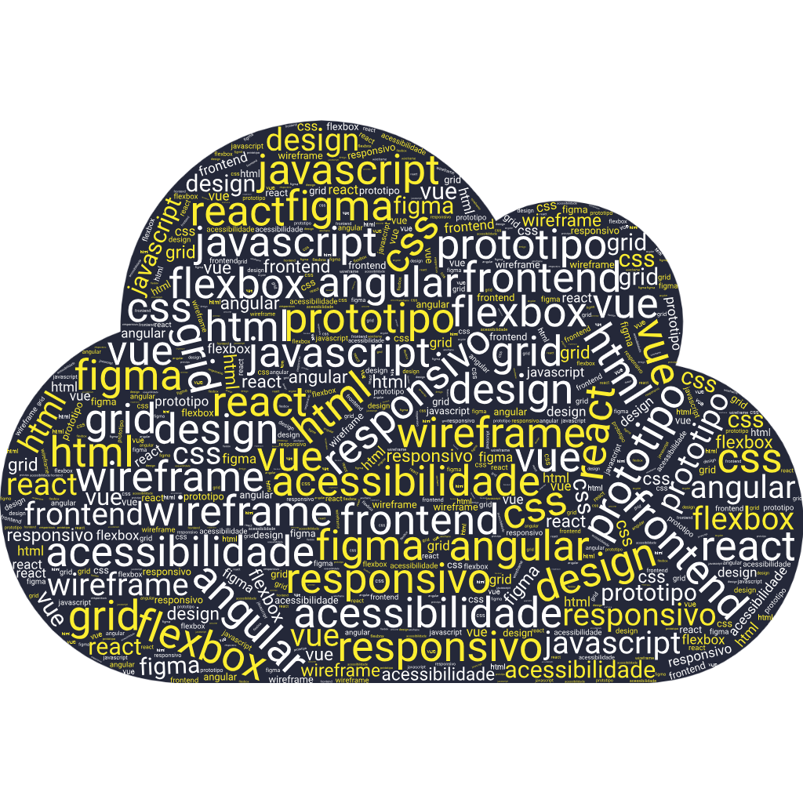

Sou um developer apaixonado por transformar ideias em soluções digitais eficientes. Trabalho com tecnologias modernas para criar aplicações rápidas, seguras e fáceis de usar.

A disciplina de Desenvolvimento de Interfaces Web ensina a criar páginas e aplicações modernas, combinando HTML para estruturar o conteúdo, CSS para o design e JavaScript para a interatividade. Além das bases, aprofunda-se em React, que permite construir interfaces dinâmicas com componentes reutilizáveis, e em Next.js, que traz recursos avançados de performance e renderização. O objetivo é preparar o estudante para desenvolver interfaces funcionais, responsivas e alinhadas às exigências atuais do mercado web.